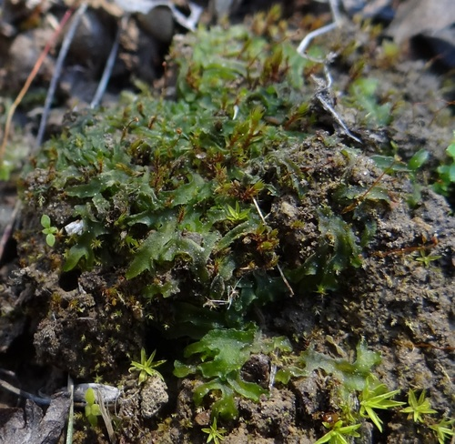

Notothyladales
A Hornwort Order
Notothyladales is an order within the Anthocerotophyta (hornworts), a division of bryophytes (non-vascular land plants). This group is characterized by its relatively small, often horizontally oriented sporophytes, distinguishing it from other hornwort orders with typically larger, more erect 'horns'.
Overview
Hornworts (division Anthocerotophyta) represent one of the three main lineages of bryophytes, alongside mosses and liverworts. They possess a unique life cycle dominated by the haploid gametophyte generation, with the diploid sporophyte generation growing directly from, and remaining dependent on, the gametophyte. Notothyladales is one of several orders within the hornworts.
The order Notothyladales, primarily represented by the genus Notothylas, comprises species found worldwide, often growing as small, inconspicuous rosettes on damp, disturbed soil, such as fields, banks, and paths. They share the general hornwort characteristic of harboring symbiotic cyanobacteria (Nostoc) within cavities in their thallus, which fix atmospheric nitrogen.
The defining feature of the order is the morphology of the sporophyte, which is significantly smaller and less developed compared to the prominent 'horns' of orders like Anthocerotales. In Notothylas, the sporophyte is often short, somewhat flattened, and may remain partially or wholly enclosed within the gametophyte tissue (involucre).
Quick Facts
- Scientific Name: Notothyladales
- Common Name: A Hornwort Order
- Primary Genus: Notothylas (most species)
- Number of Species: Approximately 50-60 species in the order
- Distribution: Worldwide, often on moist, disturbed soil
- Evolutionary Group: Bryophytes - Hornworts (Anthocerotophyta)
Key Characteristics
Gametophyte (Thallus)
The dominant, photosynthetic generation is the gametophyte, which takes the form of a flattened, lobed structure called a thallus. In Notothyladales, the thallus is typically small, often forming rosettes, and relatively simple internally compared to some liverworts. It anchors to the substrate via rhizoids. Distinctive internal cavities within the thallus usually contain colonies of nitrogen-fixing cyanobacteria (Nostoc), often visible as dark spots.
Reproductive Structures (Gametangia)
Sexual reproduction involves gametes produced in multicellular structures called gametangia, which are embedded within the upper surface of the gametophyte thallus. Male structures (antheridia) produce sperm, and female structures (archegonia) produce eggs. Fertilization requires water for sperm to swim to the egg.
Sporophyte
Following fertilization, the diploid zygote develops into the sporophyte, which remains attached to and partially dependent on the gametophyte. Key features of the Notothyladales sporophyte (especially in Notothylas) include:
- Small Size: Significantly smaller and shorter than the sporophytes of most other hornworts.
- Orientation: Often grows horizontally or obliquely, rather than strictly vertically.
- Structure: Consists of a foot embedded in the gametophyte, a very short or absent seta, and a capsule (sporangium) where spores are produced.
- Dehiscence: The capsule typically splits along one or two longitudinal lines to release spores, unlike the bivalved dehiscence common in Anthocerotales.
- Basal Meristem: Like all hornworts, possesses a meristem at the base of the capsule, allowing for continuous growth and spore production over an extended period (though less pronounced in Notothylas).
- Pseudoelaters: Sterile, multicellular structures mixed with the spores within the capsule, which aid in spore dispersal.
- Stomata: Stomata may be present or absent on the capsule wall, unlike other hornwort orders where they are typically present.
Cellular and Chemical Features
Like most hornworts, cells typically contain a single large chloroplast (per cell) with a central pyrenoid (though this can vary). They lack specialized conducting tissues (xylem/phloem) found in vascular plants. The symbiotic relationship with nitrogen-fixing Nostoc is a key physiological feature. They rely on water for fertilization and nutrient absorption directly through the thallus.
Field Identification
Identifying Notothyladales involves recognizing the general features of hornworts and the specific characteristics of this order, particularly the sporophyte.
Primary Identification Features
- Thalloid Gametophyte: Flattened, green, often rosette-like plant body growing flat on the substrate.
- Nostoc Colonies: Dark spots often visible within the thallus tissue.
- Distinctive Sporophyte (when present): Arises from the gametophyte. In Notothyladales (esp. Notothylas), look for small, short, often horizontally oriented, somewhat banana-shaped sporophytes, sometimes partially hidden by gametophyte tissue.
- Single Large Chloroplast: Visible with high magnification, characteristic of many hornworts.
Secondary Identification Features
- Habitat: Typically found on damp, disturbed soil (fields, paths, banks).
- Simple Thallus Structure: Lacks the complex internal air chambers of some liverworts.
- Pseudoelaters: Microscopic; mixed with spores inside the capsule.
Seasonal Identification Tips
Identification relies on observing both generations:
- Gametophyte: Present year-round in suitable moist conditions. Look for the characteristic thallus shape and Nostoc colonies.
- Sporophyte: Develop after fertilization, often appearing seasonally depending on moisture and temperature. The small, unique sporophyte shape is key for identifying Notothyladales (specifically Notothylas).
Common Confusion Points
Notothyladales, and hornworts in general, can be confused with:
- Thalloid Liverworts (e.g., Marchantiales, Pellia): Also have flattened thalli, but liverworts typically have oil bodies in their cells (visible microscopically), lack Nostoc colonies within the main thallus, and have very different sporophytes (typically short-lived, with a distinct seta, lacking a basal meristem and stomata).
- Algae (e.g., Green Algae): Some terrestrial algae form green films or mats, but lack the organized thallus structure, rhizoids, gametangia, and sporophytes of hornworts.
- Moss Protonemata: The early filamentous stage of moss growth can resemble algae or simple thalli, but will eventually develop into leafy moss shoots.
- Other Hornwort Orders (e.g., Anthocerotales): Distinguished primarily by sporophyte morphology; Anthocerotales have much larger, longer, vertically oriented sporophytes that split into two valves.
Field Guide Quick Reference
Look For (Gametophyte):
- Flattened, green thallus (often rosette)
- Nostoc colonies (dark spots)
- No oil bodies (vs. Liverworts)
- Single large chloroplast per cell (often)
Look For (Sporophyte - Notothyladales):
- Small, short capsule
- Often horizontal/oblique orientation
- Often partially enclosed
- Dehisces along 1-2 lines (not 2 valves)
- Arises directly from gametophyte
Notable Examples
The order is primarily represented by the genus Notothylas.

Notothylas orbicularis
(Orbicular Notothylas)
A widespread species found in temperate and tropical regions. It forms small, yellowish-green rosettes on damp soil. The sporophytes are characteristically small, somewhat flattened, and often remain largely enclosed within the involucre of the gametophyte thallus. It's a typical representative of the order.

Notothylas spp.
(Various Notothylas)
Other species within the genus Notothylas share the general characteristics of small thalli and reduced, often horizontally oriented sporophytes. Specific species identification often requires microscopic examination of spores and pseudoelaters.
Phylogeny and Classification
Notothyladales is an order within the division Anthocerotophyta (hornworts). Hornworts as a group are considered one of the earliest diverging lineages of land plants (embryophytes), although their exact relationship to mosses, liverworts, and vascular plants is still debated. They may be sister to vascular plants, or sister to mosses + vascular plants, or sister to all other land plants.
Within the hornworts, Notothyladales represents a distinct lineage characterized by its unique sporophyte morphology (small, reduced). Molecular data supports its separation from other orders like Anthocerotales, Dendrocerotales, and Phymatocerotales. The reduced sporophyte is generally considered a derived feature within hornworts.
Position in Plant Phylogeny
- Kingdom: Plantae
- Clade: Embryophytes (Land Plants)
- Division: Anthocerotophyta (Hornworts)
- Class: Anthocerotopsida
- Order: Notothyladales
Evolutionary Significance
Notothyladales and hornworts generally are significant for:
- Basal Land Plant Lineage: Provide insights into the early evolution of land plants, including features like stomata and symbiosis.
- Unique Sporophyte: The hornwort sporophyte with its basal meristem represents a unique evolutionary trajectory among bryophytes. The reduced form in Notothyladales shows evolutionary modification.
- Nitrogen Fixation Symbiosis: The consistent symbiosis with Nostoc highlights the importance of microbial interactions in plant evolution and ecology.
- Simple Gametophyte Structure: Represents a relatively simple body plan among land plants.